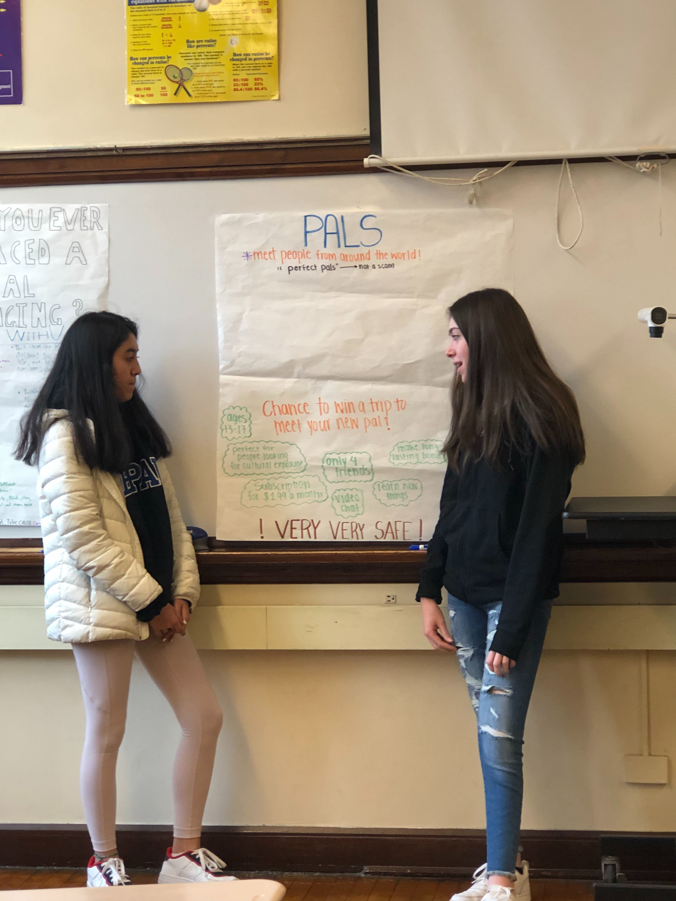

According to Google, protostar is the phase that a celestial object undergoes before it becomes a main-sequence star. In other words, it is the early stage of a star as it begins
to form.
Okay, but what does that have to do with entrepreneurship?
It's the perfect analogy for the growth our students undergo throughout the year! Like a protostar, most of our students begin with little to no knowledge background knowledge of entrepreneurship. However, through the careful guidance of their mentors and the resources we provide, by the end of the year, our students gain a firm base of knowledge that will enable them to continue their ventures and move onto the next step in their entrepreneurial journey!
Needless to say, here's some of the incredible startups our students have launched since our inception in October 2019:
Okay, but what does that have to do with entrepreneurship?
It's the perfect analogy for the growth our students undergo throughout the year! Like a protostar, most of our students begin with little to no knowledge background knowledge of entrepreneurship. However, through the careful guidance of their mentors and the resources we provide, by the end of the year, our students gain a firm base of knowledge that will enable them to continue their ventures and move onto the next step in their entrepreneurial journey!
Needless to say, here's some of the incredible startups our students have launched since our inception in October 2019:
pro·to·star 🪐
/ˈprōdəˌstär/
a contracting mass of gas which represents an early stage in the formation of a star, before nucleosynthesis has begun.
2019-2020 Cohort Teams:
